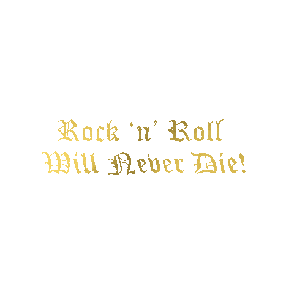

Group Members
Eli Talbott: If you choose not to decide you still have made a choice.(rush)
Ryan Deno: Be patient in becoming the person you've never been before.
Sebastian Saldua: Live for nothing, or die for something.
Aiden DeMonte: Why do they call it of when why do they call it oven when you of in the meme of out eat the food eat the of the out food?

The gif is a stagnant image of a retro poster for the Brookfield Zoo. The words are interrupted by an icon of a black panther. The bottom right says Federal Art Project.
